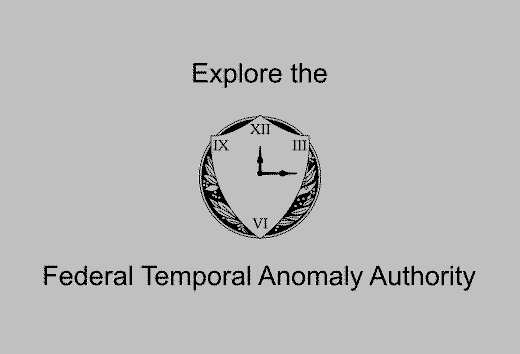

Programs and OperationsPrograms and Operations
Programs and OperationsPrograms and Operations

The Federal Temporal Anomaly Authority has worked dilligently for the American people for over 25 years keeping the American people safe and the timeline stable. This work is undertaken by the hard working men and women of the FTAA - scientists, researchers, technicians, historians, and policy experts. The backbone of the FTAA are the skilled teams that help maintain critical system and avoid significant disruption to the flow of time.
Emmet Riddle, Director, Federal Temporal Anomaly Authority
In this hypermedia presentation, you will find more information on the work the men and women of the FTAA do each day. Use the "Prev" and "Next" buttons below each entry to navigate through the hypermedia presentation. Use the "Top" button to return to this page.
Note: this presentation utilizes large image files which may load slowly on some WWW connections.


Mission | Programs and Operations | Employee Data Storage | Index
Need help? Have a temporal policy question? Email us at ftaaweb@stjc.edu or by phone at (202) 738-9235.
Last Updated: November 17, 1993
This site is best viewed using the NCSA Mosaic WWW browser.